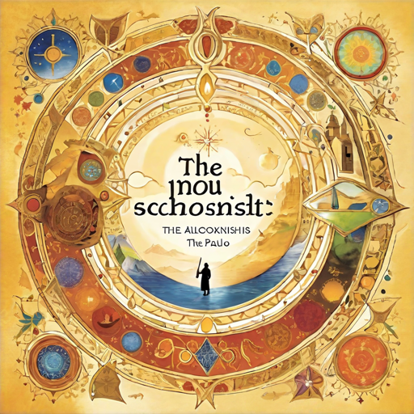

Hayvan Çiftliği - George Orwell
George Orwell'ın klasik eseri "Hayvan Çiftliği", insanlık tarihini ve totaliter rejimleri hicveden güçlü bir politik alegoridir. Çiftlikteki hayvanlar, insan yöneticilerinden bıkan ve kendi kendilerini yönetme kararı alan bir grup hayvanı temsil eder. Başlangıçta umut dolu bir devrimle yönetimi ele geçiren hayvanlar, zamanla liderlikte güç mücadeleleri yaşarlar ve çiftlikteki düzen diktatoryal bir yapıya dönüşür. Orwell, kitap boyunca güç, manipülasyon ve ideolojiye dair derin bir eleştiri sunar, okuyucuları düşünmeye ve sorgulamaya teşvik eder.
Suç ve Ceza - Dostoyevski

Dostoyevski'nin başyapıtı "Suç ve Ceza", Raskolnikov adında genç ve zeki bir adamın içsel çatışmasını ve ahlaki yıkımını konu alır. Raskolnikov, toplumun normlarını reddeden bir teoriye dayanarak bir cinayet işler. Ancak cinayetin ardından içsel savaş başlar ve suçluluk duygusu onu esir alır. Roman, Raskolnikov'un suçunu itiraf etme arzusu ile kaçınma eğilimi arasındaki mücadelesini, ahlaki yargıları ve insan doğasının karmaşıklığını inceler. Dostoyevski, eserinde suçun psikolojik etkilerini ve ahlaki sorgulamaları ustalıkla işler, okuyucularını suçun doğası ve insanın vicdanı üzerine derin düşüncelere sevk eder.
Savaş ve Barış - Tolstoy
Tolstoy'un epik başyapıtı "Savaş ve Barış", Napolyon'un Rusya seferi sırasında yaşanan olayları merkezine alır ve çeşitli Rus ailelerinin hayatlarına odaklanarak tarihsel ve kişisel olayları harmanlar. Roman, savaşın acımasız gerçekleriyle barışın iç huzuru arasındaki zıtlığı inceler. Karakterlerin içsel yolculukları ve toplumsal değişimlerin yanı sıra savaşın kaosu ve trajedisiyle yüzleşir. Tolstoy, eserinde insanın doğasını, tarihin akışını ve insanın özgürlüğünü derinlemesine keşfeder, okuyucularını düşünmeye ve sorgulamaya yönlendirir.
Jane Eyre - Charlotte Bronte
Charlotte Bronte'nin klasik eseri "Jane Eyre", yetim kalan ve zorlu bir çocukluk geçiren Jane'in hayatını merkeze alır. Jane, sıradışı bir güçle donatılmış, zeki ve bağımsız bir genç kadındır. Öğretmenlik yaparken, kendisinden yaşça büyük ve zengin bir adam olan Mr. Rochester'a aşık olur. Ancak Mr. Rochester'ın gizemli geçmişi ve çözülmemiş sırları, Jane'in mutluluğunu tehdit eder. Roman, cinsiyet rollerini, sınıf ayrımcılığını ve ahlaki değerleri derinlemesine ele alırken, Jane'in kişisel gücünü ve özgürlük arayışını vurgular. Jane Eyre, unutulmaz bir karakter portresi çizer ve okuyucularını duygusal bir yolculuğa çıkarırken, kadının özgürlük ve bağımsızlık arayışını cesurca anlatır.
Körlük - Jose Saramago
José Saramago'nun "Körlük" adlı romanı, bir şehirde aniden başlayan bir körlük salgınıyla başlar. Toplumun her kesiminden insanlar bu körlüğe yakalanırken, hükümet yetkilileri tarafından karantinaya alınır ve birbirlerine yardım etmeye çalışırlar. Ancak bu karanlık ortamda insan doğası ve uygarlığın sınırları sınanır. Roman, toplumun çürümesini, insanların içsel karanlıkla yüzleşmesini ve umudun yeniden doğuşunu işlerken, okuyucuları düşünmeye ve sorgulamaya yönlendirir. Saramago'nun deneysel üslubu ve derin insan betimlemeleriyle "Körlük", modern klasikler arasında yer alır.
Yaşamak - Yu Hua
Yu Hua'nın "Yaşamak" adlı romanı, Çin'in 20. yüzyıl tarihine odaklanırken, bir ailenin ve ülkenin karmaşık değişimlerini anlatıyor. Ana karakter, Yan'ın hayatı boyunca yaşadığı zorluklar, trajediler ve zaferlerle dolu bir yolculuğu izliyoruz. Çin'deki politik ve sosyal değişimler, Yan'ın ve ailesinin hayatını derinden etkilerken, roman aynı zamanda insan doğasının karmaşıklığını, dayanıklılığını ve umudunu da inceliyor. Yu Hua'nın sürükleyici üslubu ve insanların iç dünyalarını derinlemesine işleyişiyle "Yaşamak", Çin'in modern tarihine ve insan deneyimine ışık tutan güçlü bir eser olarak öne çıkıyor.
Simyacı - Paulo Coelho
Paulo Coelho'nun "Simyacı" adlı romanı, Santiago adındaki genç Endülüslü çobanın, kalbinin derin arzularını takip ederek macera dolu bir yolculuğa çıkışını anlatıyor. Santiago, bir rüyanın etkisiyle hazine aramak için İspanya'dan Mısır'a kadar uzanan bir yolculuğa koyulur. Bu yolculukta karşılaştığı zorluklar, sınavlar ve bilgelik dolu deneyimler sayesinde Santiago, gerçek hazineyi bulmanın, içsel dönüşüm ve kişisel keşifle eşanlamlı olduğunu keşfeder. Coelho'nun sade ve etkileyici üslubuyla kaleme aldığı "Simyacı", hayallerimizi takip etmenin gücü, özgürlük ve kişisel yolculuk konularında ilham verici bir eserdir.
Beyaz Gemi - Cengiz Aytmatov
Cengiz Aytmatov'un "Beyaz Gemi" adlı romanı, insanın doğayla ve kaderle olan sıra dışı ilişkisini anlatırken, Orta Asya'nın sert coğrafyasında geçen etkileyici bir hikayeyi sunar. Ana karakter olan Söyönböyük, babasının ölümünden sonra babasının hayvanlarına sahip çıkmakla yükümlüdür. Bu süreçte doğa ve insan arasındaki bağın karmaşıklığını, hayvanlarla olan etkileşimlerinde keşfeder. Roman, Söyönböyük'ün hayatındaki zorluklar, trajediler ve umutlar aracılığıyla insanın varoluşsal sınavını ve doğayla olan uyumu derinlemesine inceler. Aytmatov'un benzersiz anlatımı ve güçlü karakter portreleriyle "Beyaz Gemi", insanın içsel dünyasını ve doğayla olan ilişkisini sorgulayan etkileyici bir eserdir.
Uğultulu Tepeler - Emily Bronte
Emily Bronte'nin klasik eseri "Uğultulu Tepeler", İngiltere'nin kuzeyindeki ölümcül bir aşk üçgenini ve aile sırlarının karmaşıklığını anlatır. Catherine Earnshaw, zengin ve soylu bir aileye evlatlık olarak alınan Heathcliff ile büyürken aralarında yoğun bir bağ oluşur. Ancak Catherine'in evlenmesiyle, Heathcliff tarafından yaralanan bir kalp ve intikam arzusuyla başa çıkmak zorunda kalır. Roman, aşkın acımasız doğasını, kin ve nefretin yıkıcı etkilerini ve toplumun katı sınıf ayrımcılığını derinlemesine işlerken, doğaüstü ve romantik ögelerle bezenmiş bir trajedi sunar. Bronte'nin yoğun duygusal anlatımı ve karakterlerin karmaşıklığıyla "Uğultulu Tepeler", edebiyat tarihinde unutulmaz bir yer edinmiştir.
Drina Köprüsü - Ivo Andric
Ivo Andrić'in "Drina Köprüsü" adlı romanı, Osmanlı İmparatorluğu döneminde Bosna'nın Vişegrad şehrinde bulunan, tarihi bir köprünün etrafında şekillenen bir dizi hikayeyi anlatır. Köprü, zamanla değişen ve çalkantılı tarihi dönemler boyunca insanların yaşamlarını birleştiren bir sembol haline gelir. Roman, farklı dönemlerde yaşayan insanların sevinçlerini, acılarını, aşklarını ve savaşlarını aktarırken, köprüye bağlı olan insanların ve toplumun değişen yüzlerini ve kültürel kimliklerini derinlemesine inceler. Andrić'in ustalıklı anlatımı ve karakterlerin psikolojik derinliğiyle "Drina Köprüsü", tarihin akışını ve insanın varoluşsal sınavını sorgulayan unutulmaz bir eserdir.